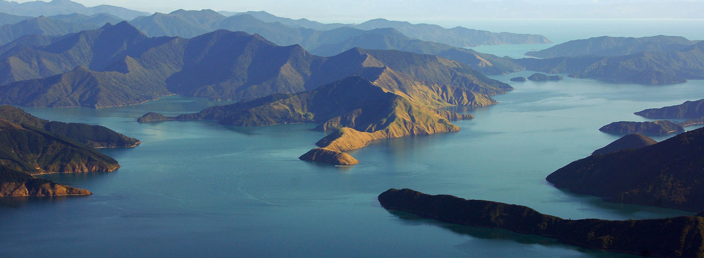
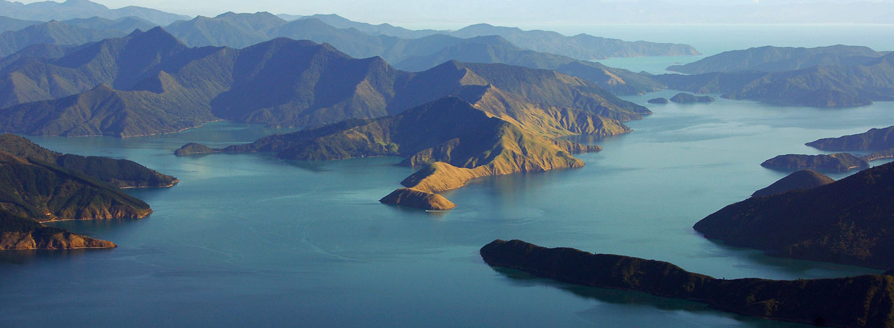

Home
Regions
West Coast
Marlborough
Central Otago
Wellington
Auckland
Map
History
Contact
Marlborough
Te Tauihu-o-te-waka
Check out The Long Weekends top five things to do in the Marlborough region!
Taste Marlborough
One of the best things to do in Marlborough is dine at some of New Zealands best restaurants, Marlborough produces some of the finest quility ingredients New Zealand has to offer. Match with a glass of world famous sav blanc and you have one of the best clurinary experainces you will have.
Queen Charlotte Track
The spectacular walking track, stretching from historic Ship Cove to Anakiwa, passes through lush coastal forest, around coves and inlets, and along skyline ridges offering breathtaking views of the Queen Charlotte and Kenepuru Sounds. Regarded as one of the classic New Zealand walkways the Queen Charlotte Track is a long track, not a steep track.
Wine tasting at New Zelands finest winieries
Marlborough is New Zealand’s largest wine region and is world-famous for its Sauvignon Blanc. The cold nights, hot sunny days, and low rainfall at the top of the South Island are the ideal conditions to create this crisp and aromatic white wine. You’ll also find good Pinot Noir, Chardonnay, Pinot Gris, Riesling, and Gewurztraminer.
Swimm with Dusky Dolphines in the french pass
Ready, Set, Swim (with dolphins!) Once spotted, we’ll cruise with the dolphins and get you ready to swim if conditions allow. As a permitted operator, we abide by the rules and regulations established for dolphin swimming and viewing activities. If conditions are good, then we’ll place you in the water where you will experience a real adventure for your soul – an experience you’ll never forget. Whether it’s watching a group quietly cruising along or marvelling at their high leaps, backflips and somersaults during social bouts, dolphins are a truly magnificent sight!

Cruise the Marlborough Sounds
Composed of fascinating geological features that create an awe-inspiring landscape, the many sounds, islands, islets and peninsulas that make up the Marlborough Sounds stretch across a vast area of over 4,000 km2. Whether you are an avian admirer, landscape lover, mad about marine mammals, voracious for vino or hooked on history, our Marlborough Sounds tours will satisfy any area of curiosity. With much of the Marlborough Sounds region being inaccessible on foot, the best and only way to visit many areas is by boat.

{kind=link}
{kind=link}
![Swimm with Dusky Dolphines in the french pass Ready, Set, Swim (with dolphins!) Once spotted, we’ll cruise with the dolphins and get you ready to swim if conditions allow. As a permitted operator, we abide by the rules and regulations established for dolphin swimming and viewing activities. If conditions are good, then we’ll place you in the water where you will experience a real adventure for your soul – an experience you’ll never forget. Whether it’s watching a group quietly cruising along or marvelling at their high leaps, backflips and somersaults during social bouts, dolphins are a truly magnificent sight!](assets/img/dusky.jpeg){kind=link}
![ Cruise the Marlborough Sounds Composed of fascinating geological features that create an awe-inspiring landscape, the many sounds, islands, islets and peninsulas that make up the Marlborough Sounds stretch across a vast area of over 4,000 km2. Whether you are an avian admirer, landscape lover, mad about marine mammals, voracious for vino or hooked on history, our Marlborough Sounds tours will satisfy any area of curiosity. With much of the Marlborough Sounds region being inaccessible on foot, the best and only way to visit many areas is by boat.](assets/img/marlborough-sounds.jpeg){kind=link}